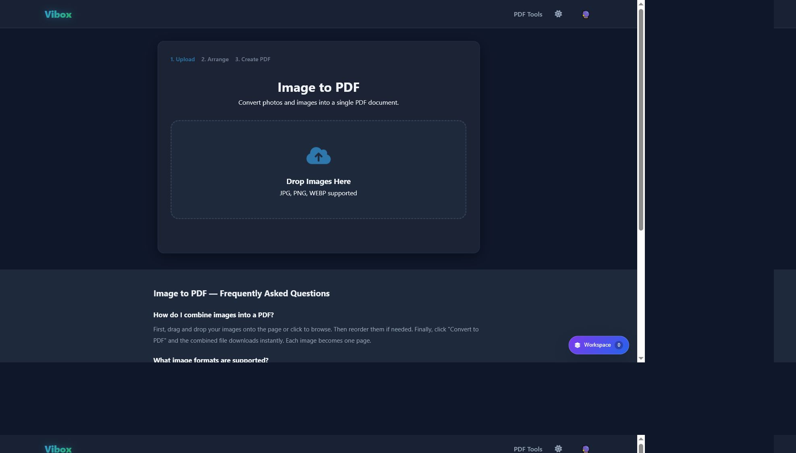
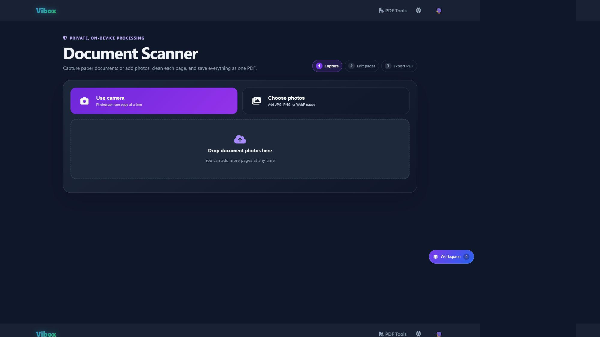

<!doctype html><meta charset="utf-8"><style>body{margin:0;background:#020617;color:#fff;font:700 14px system-ui;display:grid;grid-template-columns:1fr 1fr;gap:12px;padding:12px}figure{margin:0}figcaption{padding:0 0 8px}img{display:block;width:100%;border:1px solid #334155}</style><figure><figcaption>Existing Vibox PDF tool — visual source</figcaption></figure><figure><figcaption>Document Scanner — implementation</figcaption></figure>
